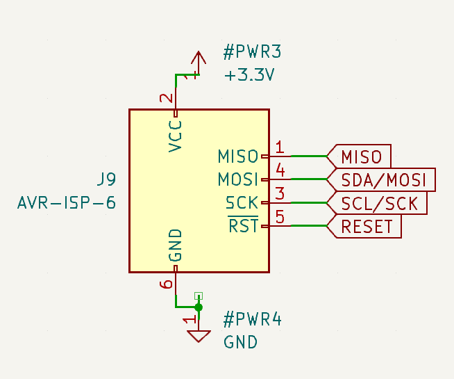

Microsoft · PCB schematics · 2026
SchGen
A request in plain English → a working KiCad schematic.
Input
"I want a 3.3V AVR ISP-6 programming header exposing MISO, MOSI/SDA, SCK/SCL, RESET, VCC, and GND to program a microcontroller."
User request, paper Fig. 6b
→
Process
GPT-oss 20B + LoRAtrained on schematics written as code
# the model writes calls like these
add_schematic_symbol(..., "J9", ...)
connect_pins("J9", "1", ...)
add_label(..., "MISO", ...)
CheckRun the code → KiCad ERC → expert review
→
Output

Generated schematic, paper Fig. 6b
Data1,390 designsreal KiCad projects → 8,420 samples
Model20B, LoRA rank 8GPT-oss 20B
Compute21 A100-hoursone training run
Result17% → 60.5%circuits judged correct by experts; 82% pass ERC
Source: paper · code · dataset · model. Numbers as reported by the authors.